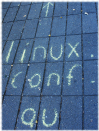

Andrew Morton at linux.conf.au

The Friday morning linux.conf.au keynote was delivered by Australian expatriate Andrew Morton; his wide-ranging talk touched on many aspects of the kernel development process.Andrew has brought a different approach to kernel development, and it showed early in the talk. He noted that Linus has often characterized his job as being rejecting patches, rather than accepting them. Andrew disagrees with that approach. If somebody has gone to the trouble to put together a patch, even a really poorly-done one, there was probably some sort of underlying need which motivated that work. A patch identifies a problem, at least for some users; you can't just reject it or the kernel as a whole will lose out. So Andrew sees his role as helping to get patches into the kernel, rather than taking pride in rejecting them. According to Andrew, anybody who goes to the trouble of submitting a patch deserves a response. If the patch is not merged, the developer is entitled to an explanation of why.
He does not want to have to understand all of those patches himself, however. It's up to the subsystem maintainers to evaluate patches and, eventually, merge them. Andrew's job is to get the maintainers to get involved. Techniques he can employ include the "troll merge," simply adding the patch to -mm to force the maintainer to react. Asking "dumb questions" on the mailing lists can also help. One way or another, Andrew works to get a response from the relevant maintainers.
Andrew's goal is to bring more professionalism to the kernel development process. He believes that is happening; among other things, he notes, patch traffic now slows down significantly on weekends - that was not always the case. He'd like to settle down the process, and, eventually, hand off pieces of it to others. One such piece, most likely, would be bug tracking. He cautioned, however, that these kernel maintenance tasks are not part-time jobs.
The new development model was revisited; much of what was said will be familiar to LWN readers. He noted that the older process failed one of the kernel's most important customers: the distributors. By getting features merged, tested, and ready for deployment quickly, the new process serves the distributors better. There has, perhaps, been some cost to another set of customers: those who run the mainline kernel on their systems. Andrew will be working hard to increase the stability of the mainline releases to make life easier for that group of users.
Meanwhile, he notes, the developers are shoveling about 10MB of patches into the kernel every month.
The stable 2.6 series (currently at 2.6.11.7) is, according to Andrew, not sure to succeed. He believes that it does not get enough developer attention, and that the bar for patches has been set too high. And it does not address the real problem: that mainline releases have regressions that cause breakage for some users. Really fixing the problems, he says, requires getting the developers to be more careful and more focus on fixing known bugs. He says the process might yet move to an even/odd release scheme, where even-numbered releases (2.6.14, say) would be limited to bug fixes.
On testing: Andrew notes that, while the development process is highly dependent on a large community of testers, it has no real way of rewarding them for their work. He will look into acknowledging testers in the kernel changelogs; if you helped to find a bug, your name can appear alongside that of the developer who fixed it.
On the BitKeeper front, Andrew stated that he was never entirely happy with the decision to use that tool. It imposed an opportunity cost: had the kernel hackers gone off three years ago to build the source code management system they really needed, they would have something quite nice by now. He noted that version control appears to be one of those problems which drives developers crazy, and that's a problem. If you depend on a tool with insane developers, things will "end in tears." Now he's keeping his head down and waiting to see how the whole thing settles out.
Finally, he noted that many developers who think they need a source code
management system really don't. If your real purpose is to keep a set of
patches in sync with an evolving mainline kernel - which is the case for
many developers - then a tool like quilt makes
more sense.
| Index entries for this article | |
|---|---|
| Kernel | Development model |
| Conference | linux.conf.au/2005 |
Posted Apr 23, 2005 18:57 UTC (Sat)
by jcm (subscriber, #18262)
[Link] (9 responses)
Posted Apr 23, 2005 19:12 UTC (Sat)
by ismail (subscriber, #11404)
[Link] (2 responses)
Posted Apr 23, 2005 22:31 UTC (Sat)
by gregkh (subscriber, #8)
[Link] (1 responses)
:)
Posted Apr 24, 2005 10:19 UTC (Sun)
by ismail (subscriber, #11404)
[Link]
Posted Apr 23, 2005 20:18 UTC (Sat)
by error27 (guest, #8346)
[Link] (5 responses)
As far as I know people were pretty careful not to force anyone to use bit keeper who didn't want to. People were all like, "Yeah. You say that now but see how long it goes before everyone has to start using bit keeper." It seems that these people were completely wrong and that Linus and Co kept their word.
Posted Apr 23, 2005 20:29 UTC (Sat)
by Per_Bothner (subscriber, #7375)
[Link] (4 responses)
Now that's a curious way of putting it.
Linux and co "kept their word" because they were forced to
by McVoy withdrawing bitkeeper - and Linus has been vocally
and publically blaming the wrong person.
Posted Apr 23, 2005 21:46 UTC (Sat)
by dlang (guest, #313)
[Link] (3 responses)
how bitkeeper stopped being used has nothing to do with Linus and Co keeping their word that they would not force anyone to use bitkeeper
Posted Apr 24, 2005 0:22 UTC (Sun)
by larryr (guest, #4030)
[Link] (2 responses)
I think the idea is that when it came time to cross that bridge-- accessing the repository without using bitkeeper-- the bridge was removed.
Larry
Posted Apr 24, 2005 3:30 UTC (Sun)
by dlang (guest, #313)
[Link] (1 responses)
Posted Apr 26, 2005 23:19 UTC (Tue)
by speedster1 (guest, #8143)
[Link]
If you depend on a tool with insane developers, things will "end in tears."
Andrew Morton at linux.conf.au
So who, aside from Linus himself, actually really supported using BitKeeper as a development tool?
Well, USB maintainer Greg Kroah comes to mind... Re: Andrew Morton at linux.conf.au
I do not know of any kernel developer with the name "Greg Kroah"Re: Andrew Morton at linux.conf.au
Lets make it Greg KH :) Re: Andrew Morton at linux.conf.au
Quite a few maintainers really like bit keeper. I liked poking through the bit keeper website and reading change logs. Source control seems like a good idea in my books.Andrew Morton at linux.conf.au
People were all like, "Yeah. You say that now but see how long it goes before everyone has to start using bit keeper." It seems that these people were completely wrong and that Linus and Co kept their word.
Andrew Morton at linux.conf.au
please point out anyone who was forced to use bitkeeper.Andrew Morton at linux.conf.au
Andrew Morton at linux.conf.au
but the point was that nobody would be required to access the repository if they didn't agree to the bitkeeper license as the data was made available through other means (and it was made available, eventually even to the satisfaction of the bk critics)Andrew Morton at linux.conf.au
I am one developer who was discouraged from contributing to the kernel by the use of bitkeeper. In early 2.6 days I tried to get involved in bringing mpc8xx embedded pcc sub-architecture up to speed because it was lagging behind, and the maintainer Dan Malek told me he was not really interested in patches unless they were against his own bitkeeper tree. He would rather do the work himself than use patches generated against the latest in CVS.Andrew Morton at linux.conf.au